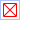
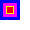
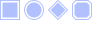
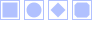

Class wibox.widget.checkbox
A boolean display widget.
If necessary, themes can implement custom shape:

wibox.widget {
checked = true,
color = beautiful.bg_normal,
paddings = 2,
check_shape = function(cr, width, height)
local rs = math.min(width, height)
cr:move_to( 0 , 0 )
cr:line_to( rs , 0 )
cr:move_to( 0 , 0 )
cr:line_to( 0 , rs )
cr:move_to( 0 , rs )
cr:line_to( rs , rs )
cr:move_to( rs , 0 )
cr:line_to( rs , rs )
cr:move_to( 0 , 0 )
cr:line_to( rs , rs )
cr:move_to( 0 , rs )
cr:line_to( rs , 0 )
end,
check_border_color = '#ff0000',
check_color = '#00000000',
check_border_width = 1,
widget = wibox.widget.checkbox
}

Usage:
wibox.widget {
checked = true,
color = beautiful.bg_normal,
paddings = 2,
shape = gears.shape.circle,
widget = wibox.widget.checkbox
}
Info:
- Copyright: 2010 Emmanuel Lepage Vallee
- Author: Emmanuel Lepage Valle
Object properties
| wibox.widget.checkbox.border_width | The outer (unchecked area) border width. |
| wibox.widget.checkbox.bg | The outer (unchecked area) background color, pattern or gradient. |
| wibox.widget.checkbox.border_color | The outer (unchecked area) border color. |
| wibox.widget.checkbox.check_border_color | The checked part border color. |
| wibox.widget.checkbox.check_border_width | The checked part border width. |
| wibox.widget.checkbox.check_color | The checked part filling color. |
| wibox.widget.checkbox.shape | The outer (unchecked area) shape. |
| wibox.widget.checkbox.check_shape | The checked part shape. |
| wibox.widget.checkbox.paddings | The padding between the outline and the progressbar. |
| wibox.widget.checkbox.color | The checkbox color. |
| wibox.widget.checkbox.checked | If the checkbox is checked. |
| wibox.widget.checkbox.color | The checkbox color. |
| wibox.widget.checkbox.forced_height | Force a widget height. |
| wibox.widget.checkbox.forced_width | Force a widget width. |
| wibox.widget.checkbox.opacity | The widget opacity (transparency). |
| wibox.widget.checkbox.visible | The widget visibility. |
Signals
| widget::layout_changed | When the layout (size) change. |
| widget::redraw_needed | When the widget content changed. |
| button::press | When a mouse button is pressed over the widget. |
| button::release | When a mouse button is released over the widget. |
| mouse::enter | When the mouse enter a widget. |
| mouse::leave | When the mouse leave a widget. |
Theme variables
| beautiful.checkbox_border_width | The outer (unchecked area) border width. |
| beautiful.checkbox_bg | The outer (unchecked area) background color, pattern or gradient. |
| beautiful.checkbox_border_color | The outer (unchecked area) border color. |
| beautiful.checkbox_check_border_color | The checked part border color. |
| beautiful.checkbox_check_border_width | The checked part border width. |
| beautiful.checkbox_check_color | The checked part filling color. |
| beautiful.checkbox_shape | The outer (unchecked area) shape. |
| beautiful.checkbox_check_shape | The checked part shape. |
| beautiful.checkbox_paddings | The padding between the outline and the progressbar. |
| beautiful.checkbox_color | The checkbox color. |
Methods
| wibox.widget.checkbox:index (widget[, recursive[, ...]]) | Get a widex index. |
| wibox.widget.checkbox:get_all_children () | Get all direct and indirect children widgets. |
| wibox.widget.checkbox:setup (args) | Set a declarative widget hierarchy description. |
| wibox.widget.checkbox:buttons (_buttons) | Set/get a widget’s buttons. |
| wibox.widget.checkbox:emit_signal_recursive (signal_name, ...) | Emit a signal and ensure all parent widgets in the hierarchies also forward the signal. |
| wibox.widget.checkbox:disconnect_signal (name, func) | Disconnect to a signal. |
| wibox.widget.checkbox:emit_signal (name, ...) | Emit a signal. |
| wibox.widget.checkbox:connect_signal (name, func) | Connect to a signal. |
| wibox.widget.checkbox:weak_connect_signal (name, func) | Connect to a signal weakly. |
Object properties
- wibox.widget.checkbox.border_width
- The outer (unchecked area) border width.
- wibox.widget.checkbox.bg
-
The outer (unchecked area) background color, pattern or gradient.

Usage:
wibox.widget { checked = true, color = beautiful.bg_normal, bg = '#ff00ff', border_width = 3, paddings = 4, border_color = '#0000ff', check_color = '#ff0000', check_border_color = '#ffff00', check_border_width = 1, widget = wibox.widget.checkbox } - wibox.widget.checkbox.border_color
- The outer (unchecked area) border color.
- wibox.widget.checkbox.check_border_color
- The checked part border color.
- wibox.widget.checkbox.check_border_width
- The checked part border width.
- wibox.widget.checkbox.check_color
- The checked part filling color.
- wibox.widget.checkbox.shape
-
The outer (unchecked area) shape.

See also:
Usage:
for _, s in ipairs {'rectangle', 'circle', 'losange', 'octogon'} do wibox.widget { checked = true, color = beautiful.bg_normal, paddings = 2, shape = gears.shape[s], widget = wibox.widget.checkbox } end
- wibox.widget.checkbox.check_shape
-
The checked part shape.
If none is set, then the shape property will be used.

See also:
Usage:
for _, s in ipairs {'rectangle', 'circle', 'losange', 'octogon'} do wibox.widget { checked = true, color = beautiful.bg_normal, paddings = 2, check_shape = gears.shape[s], widget = wibox.widget.checkbox } end
- wibox.widget.checkbox.paddings
-
The padding between the outline and the progressbar.
Type:
- paddings A number or a table
- top number (default 0)
- bottom number (default 0)
- left number (default 0)
- right number (default 0)
- paddings A number or a table
- wibox.widget.checkbox.color
- The checkbox color. This will be used for the unchecked part border color and the checked part filling color. Note that check_color and border_color have priority over this property.
- wibox.widget.checkbox.checked
-
If the checkbox is checked.
Type:
- boolean
- wibox.widget.checkbox.color
- The checkbox color.
- wibox.widget.checkbox.forced_height
-
Force a widget height.
Type:
- height
number or nil
The height (
nilfor automatic)
- height
number or nil
The height (
- wibox.widget.checkbox.forced_width
-
Force a widget width.
Type:
- width
number or nil
The width (
nilfor automatic)
- width
number or nil
The width (
- wibox.widget.checkbox.opacity
-
The widget opacity (transparency).
Type:
- opacity number The opacity (between 0 and 1) (default 1)
- wibox.widget.checkbox.visible
-
The widget visibility.
Type:
- boolean
Signals
- widget::layout_changed
-
When the layout (size) change.
This signal is emitted when the previous results of
:layout()and:fit()are no longer valid. Unless this signal is emitted,:layout()and:fit()must return the same result when called with the same arguments.See also:
- widget::redraw_needed
-
When the widget content changed.
This signal is emitted when the content of the widget changes. The widget will
be redrawn, it is not re-layouted. Put differently, it is assumed that
:layout()and:fit()would still return the same results as before.See also:
- button::press
-
When a mouse button is pressed over the widget.
Arguments:
- lx number The horizontal position relative to the (0,0) position in the widget.
- ly number The vertical position relative to the (0,0) position in the widget.
- button number The button number.
- mods table The modifiers (mod4, mod1 (alt), Control, Shift)
- find_widgets_result The entry from the result of
wibox.drawable:find_widgets for the position that the mouse hit.
- drawable wibox.drawable The drawable containing the widget.
- widget widget The widget being displayed.
- hierarchy wibox.hierarchy The hierarchy managing the widget’s geometry.
- x number An approximation of the X position that the widget is visible at on the surface.
- y number An approximation of the Y position that the widget is visible at on the surface.
- width number An approximation of the width that the widget is visible at on the surface.
- height number An approximation of the height that the widget is visible at on the surface.
- widget_width number The exact width of the widget in its local coordinate system.
- widget_height number The exact height of the widget in its local coordinate system.
See also:
- button::release
-
When a mouse button is released over the widget.
Arguments:
- lx number The horizontal position relative to the (0,0) position in the widget.
- ly number The vertical position relative to the (0,0) position in the widget.
- button number The button number.
- mods table The modifiers (mod4, mod1 (alt), Control, Shift)
- find_widgets_result The entry from the result of
wibox.drawable:find_widgets for the position that the mouse hit.
- drawable wibox.drawable The drawable containing the widget.
- widget widget The widget being displayed.
- hierarchy wibox.hierarchy The hierarchy managing the widget’s geometry.
- x number An approximation of the X position that the widget is visible at on the surface.
- y number An approximation of the Y position that the widget is visible at on the surface.
- width number An approximation of the width that the widget is visible at on the surface.
- height number An approximation of the height that the widget is visible at on the surface.
- widget_width number The exact width of the widget in its local coordinate system.
- widget_height number The exact height of the widget in its local coordinate system.
See also:
- mouse::enter
-
When the mouse enter a widget.
Arguments:
- find_widgets_result The entry from the result of
wibox.drawable:find_widgets for the position that the mouse hit.
- drawable wibox.drawable The drawable containing the widget.
- widget widget The widget being displayed.
- hierarchy wibox.hierarchy The hierarchy managing the widget’s geometry.
- x number An approximation of the X position that the widget is visible at on the surface.
- y number An approximation of the Y position that the widget is visible at on the surface.
- width number An approximation of the width that the widget is visible at on the surface.
- height number An approximation of the height that the widget is visible at on the surface.
- widget_width number The exact width of the widget in its local coordinate system.
- widget_height number The exact height of the widget in its local coordinate system.
See also:
- find_widgets_result The entry from the result of
wibox.drawable:find_widgets for the position that the mouse hit.
- mouse::leave
-
When the mouse leave a widget.
Arguments:
- find_widgets_result The entry from the result of
wibox.drawable:find_widgets for the position that the mouse hit.
- drawable wibox.drawable The drawable containing the widget.
- widget widget The widget being displayed.
- hierarchy wibox.hierarchy The hierarchy managing the widget’s geometry.
- x number An approximation of the X position that the widget is visible at on the surface.
- y number An approximation of the Y position that the widget is visible at on the surface.
- width number An approximation of the width that the widget is visible at on the surface.
- height number An approximation of the height that the widget is visible at on the surface.
- widget_width number The exact width of the widget in its local coordinate system.
- widget_height number The exact height of the widget in its local coordinate system.
See also:
- find_widgets_result The entry from the result of
wibox.drawable:find_widgets for the position that the mouse hit.
Theme variables
- beautiful.checkbox_border_width
- The outer (unchecked area) border width.
- beautiful.checkbox_bg
- The outer (unchecked area) background color, pattern or gradient.
- beautiful.checkbox_border_color
- The outer (unchecked area) border color.
- beautiful.checkbox_check_border_color
- The checked part border color.
- beautiful.checkbox_check_border_width
- The checked part border width.
- beautiful.checkbox_check_color
- The checked part filling color.
- beautiful.checkbox_shape
-
The outer (unchecked area) shape.
See also:
- beautiful.checkbox_check_shape
-
The checked part shape.
If none is set, then the shape property will be used.
See also:
- beautiful.checkbox_paddings
-
The padding between the outline and the progressbar.
Type:
- paddings A number or a table
- top number (default 0)
- bottom number (default 0)
- left number (default 0)
- right number (default 0)
- paddings A number or a table
- beautiful.checkbox_color
- The checkbox color. This will be used for the unchecked part border color and the checked part filling color. Note that check_color and border_color have priority over this property.
Methods
- wibox.widget.checkbox:index (widget[, recursive[, ...]])
-
Get a widex index.
- widget The widget to look for
- recursive Also check sub-widgets (optional)
- ... Aditional widgets to add at the end of the "path" (optional)
Returns:
- The index
- The parent layout
- The path between "self" and "widget"
- wibox.widget.checkbox:get_all_children ()
-
Get all direct and indirect children widgets.
This will scan all containers recursively to find widgets
Warning: This method it prone to stack overflow id the widget, or any of its
children, contain (directly or indirectly) itself.
Returns:
-
table
The children
- wibox.widget.checkbox:setup (args)
-
Set a declarative widget hierarchy description.
See The declarative layout system
- args An array containing the widgets disposition
- wibox.widget.checkbox:buttons (_buttons)
-
Set/get a widget’s buttons.
- _buttons The table of buttons that should bind to the widget.
- wibox.widget.checkbox:emit_signal_recursive (signal_name, ...)
-
Emit a signal and ensure all parent widgets in the hierarchies also
forward the signal. This is useful to track signals when there is a dynamic
set of containers and layouts wrapping the widget.
- signal_name string
- ... Other arguments
- wibox.widget.checkbox:disconnect_signal (name, func)
-
Disconnect to a signal.
- name string The name of the signal
- func function The callback that should be disconnected
- wibox.widget.checkbox:emit_signal (name, ...)
-
Emit a signal.
- name string The name of the signal
- ... Extra arguments for the callback functions. Each connected function receives the object as first argument and then any extra arguments that are given to emit_signal()
- wibox.widget.checkbox:connect_signal (name, func)
-
Connect to a signal.
- name string The name of the signal
- func function The callback to call when the signal is emitted
- wibox.widget.checkbox:weak_connect_signal (name, func)
-
Connect to a signal weakly. This allows the callback function to be garbage
collected and automatically disconnects the signal when that happens.
Warning: Only use this function if you really, really, really know what you are doing.
- name string The name of the signal
- func function The callback to call when the signal is emitted